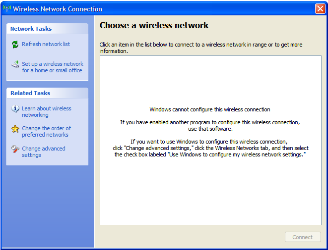
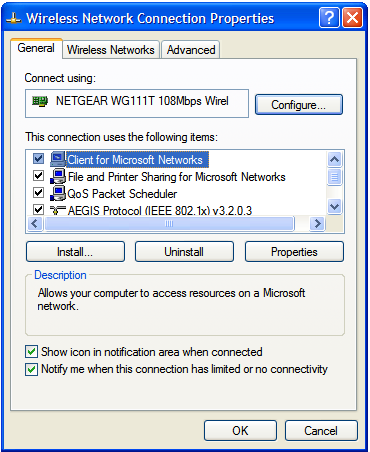
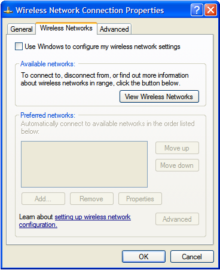
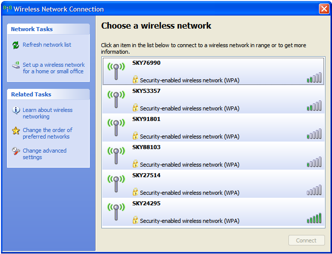

Check Connection
If you do not see a wireless connection listed in the Wireless Network Connections window, check that Windows is managing the wireless connection by following the steps below.
-
In the Wireless Network Connection window, click the Change advanced settings link on the left.
 -
In the Wireless Network Connection Properties window, click on the Wireless Networks tab at the top of the window.
 -
In the Wireless Networks tab, tick the box next to Use Windows to configure my wireless network settings, then click OK. If the box is greyed out and you are unable to tick it, try enabling the Windows wireless zero configuration service
 -
Open the Network Connections window again. (To open this from your desktop, go to Start and select Control Panel, then Network and Internet Connections, then Network Connections.)
-
Double-click the Wireless Network Connection icon in the Network Connections window again. This time the window should display the list of available wireless networks.
 -
If you are now able to see wireless networks in this window (and are not switching your Sky wireless router to use WEP encryption), go back to the wireless connection guide (step 4).
If you are switching your Sky wireless router to use WEP encryption, go back to the Switching to WEP guide (step 4).